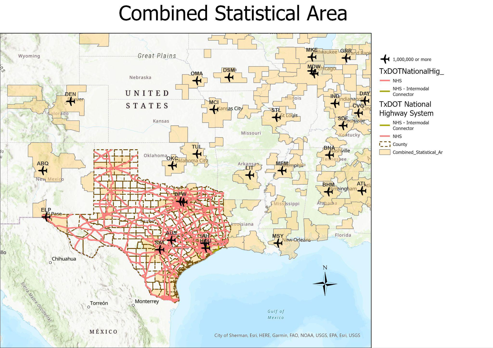

Mapping Communities
Using maps to see how services, health and property value are spread across places, from census tracts to counties.
- Active
- 2023–present
- GIS
- ArcGIS
- Census tracts
- Community health

In plain English
Where are a region's services, health care and wealth, and which places go without? Since 2023, SEAR Lab students have mapped versions of that question in ArcGIS: how U.S. metro areas connect by road, rail, air and water; how close Texas hospitals sit to airports and power plants; where community health centers stand against census-tract measures of social vulnerability; and how amenities and property value vary by county and ZIP code.
Main points
- One question runs through every map: how resources, services and value are spread across places, whether the unit is a census tract, ZIP code or county.
- The ArcGIS projects taught the lab which public layers matter, such as census tracts, the CDC Social Vulnerability Index, Justice40 disadvantaged communities and federal infrastructure maps.
Papers, code and materials
- RelatedTarrant County Land Value: the newer parcel-level property tax analysis, now its own project
- RelatedCOVID-19 Last-Mile Distribution: mapping how scarce treatments and vaccines could reach Houston's most vulnerable neighborhoods
- RelatedBuilding Asset Mapping: rooftop solar across Dallas–Fort Worth
People
- Erick C. Jones Jr., PhD, PEPrincipal Investigator · SEAR Lab directorin
- Shraddha VarekarStudent researcher; co-author of the 2023 ArcGIS report on how U.S. metro areas connectin
- Ahmed Saboor SyedStudent researcher; county-level amenity mapping in ArcGIS (2024)
- Chandramouli Munjurpet SridharanStudent researcher; county-level amenity mapping in ArcGIS (2024)in
Profiles marked in link to LinkedIn. More past and present lab members are on the SEAR Lab team page.